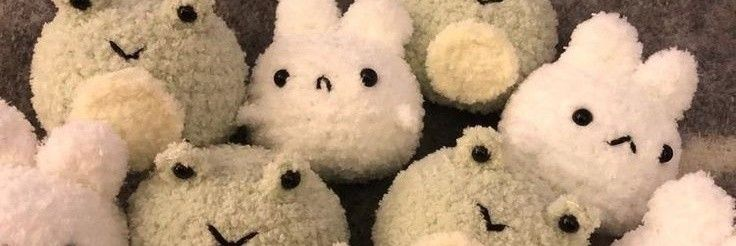

Os amigurumis têm origem no Japão e fazem parte da cultura kawaii, que valoriza objetos fofos e delicados. O termo “amigurumi” é formado pelas palavras japonesas “ami”, que significa tricotar ou fazer crochê, e “nuigurumi”, que significa boneco de pelúcia. Essa técnica começou a se popularizar no Japão após a Segunda Guerra Mundial, quando o artesanato ganhou força como forma de expressão e renda. Com o tempo, os amigurumis passaram a representar personagens, animais e objetos do cotidiano, sempre com aparência simpática. A partir dos anos 2000, essa arte se espalhou pelo mundo, principalmente com a ajuda da internet e das redes sociais. Hoje, é muito comum encontrar comunidades dedicadas a esse tipo de artesanato. Os amigurumis são valorizados por serem feitos à mão e únicos. Além disso, refletem criatividade e personalidade de quem os produz. Atualmente, são utilizados tanto como decoração quanto como presentes personalizados. Sua popularidade continua crescendo em diversos países.
Os amigurumis são criados principalmente com a técnica do crochê, utilizando agulha, fio e enchimento. O processo começa com um anel mágico, que é a base para formar estruturas circulares. A partir disso, o artesão faz aumentos e diminuições de pontos para modelar o formato desejado. Cada peça segue uma receita, também chamada de “pattern”, que indica a quantidade de pontos e carreiras. Os materiais mais comuns são fios de algodão, enchimento de fibra sintética e olhos de segurança. Após tecer todas as partes, como cabeça, corpo e membros, é feita a montagem com costura manual. O acabamento é muito importante para dar um aspecto profissional à peça. Muitos criadores também adicionam detalhes como bordados e acessórios. Com prática, é possível criar peças próprias sem seguir receitas. Esse processo exige paciência, atenção e criatividade.
O crochê e o tricô são técnicas diferentes, apesar de ambos utilizarem fios para criar peças artesanais. O crochê utiliza apenas uma agulha com gancho na ponta, enquanto o tricô utiliza duas agulhas retas ou circulares. No crochê, os pontos são mais firmes e fechados, o que é ideal para amigurumis, pois evita que o enchimento apareça. Já o tricô possui pontos mais elásticos e abertos, sendo mais comum em roupas como cachecóis e blusas. Outra diferença está na forma de execução dos pontos, que no crochê são feitos individualmente, enquanto no tricô são mantidos nas agulhas. Para amigurumis, o crochê é a técnica mais utilizada justamente pela sua estrutura mais rígida. Além disso, o crochê permite maior controle na modelagem das peças. Mesmo assim, é possível encontrar amigurumis feitos em tricô, embora sejam menos comuns. Cada técnica tem suas vantagens dependendo do objetivo do projeto. Ambas exigem prática e coordenação manual.
Os amigurumis podem ser tanto um hobby quanto uma fonte de renda, dependendo do interesse de quem pratica. Muitas pessoas começam a fazer amigurumi como forma de lazer e relaxamento, já que a atividade pode ser terapêutica. Com o tempo, ao desenvolver habilidade, algumas transformam essa prática em um negócio. A venda de amigurumis personalizados tem crescido bastante, principalmente pela internet. Plataformas digitais permitem que artesãos divulguem e comercializem suas peças para diferentes regiões. No entanto, trabalhar com amigurumi exige dedicação, organização e precificação adequada. É importante considerar o tempo de produção e o custo dos materiais. Como hobby, a prática oferece benefícios emocionais e ajuda a aliviar o estresse. Já como trabalho, pode se tornar uma renda extra ou até principal. Tudo depende dos objetivos e do comprometimento da pessoa. Em ambos os casos, o amigurumi é uma atividade gratificante.